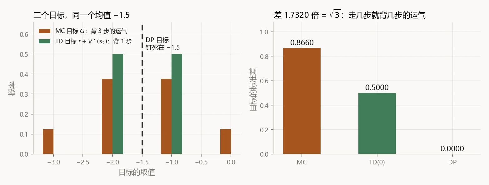
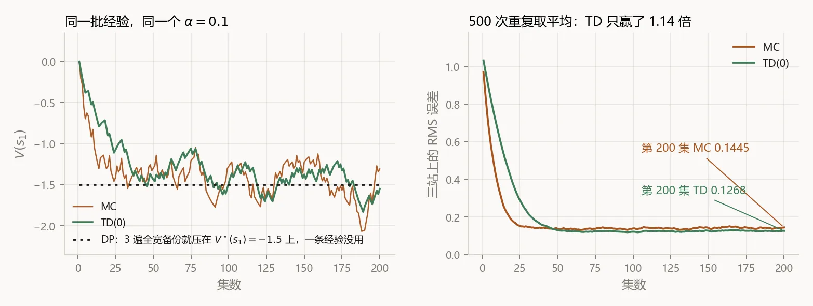
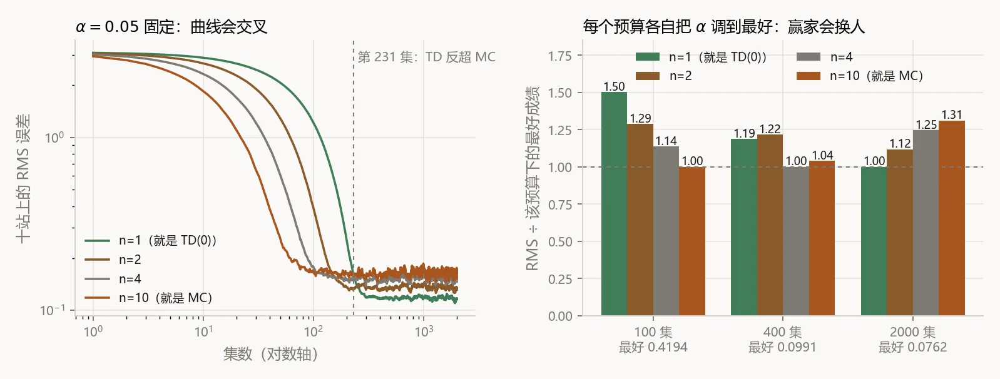

同一个方程，三种算它的办法
蒙特卡罗、时序差分、动态规划的关系
一句话：三者在解同一个方程——Bellman 期望方程 ，区别只在右边那个期望怎么估：DP 用模型把所有分支加权算干净，MC 干脆一路走到终点、用真实回报替掉它，TD 只走一步、剩下的用自己现在的估计顶上。所以 TD 不是第三条路线，它是从 MC 拿了「采样」、从 DP 拿了「自举」，拼出来的。
§ 1示例：三站地铁线
这一问不是比谁强，是问它们到底是不是一家人。所以先不推公式，先让三种方法在同一集经验上各算一次，看看给出的数差多少。
例子小到能在脑子里跑完：一条三站的地铁线。状态 终点，每走一站都要么刚好赶上（奖励 ），要么等一班车（），各一半概率。因为三步必然到站，取 。
真值不用算法也能写出来：每走一站的期望代价是 ，剩几站就乘几——
现在跑一集。随附脚本里 seed = 8 的第一集是「等 / 赶上 / 等」，奖励序列 ，所以这一集从 出发实际拿到的回报是 。
三张值表都从 开始，步长先取 （把步长这个干扰项去掉，直接看各自认的目标）。问： 该改成多少？
| 算法 | 它认的目标是什么 | 算出来 |
|---|---|---|
| MC | 这一集从 真实拿到的整条回报 | −2.0000 |
| TD(0) | 第一步的真奖励 + 现在对 的估计： | −1.0000 |
| DP | 第一步的期望奖励 + 现在对 的估计： | −0.5000 |
| 全宽穷举 | 把 条等概率轨迹的回报全枚举，取平均 | −1.5000 |
§ 2动态规划
DP 的立场是：我不试，我查表。它手里有环境模型 ，所以能把「下一步会怎样」的所有可能按概率加权算清楚，一次都不用真跑。
把这件事写成一个算子。给定策略 ，Bellman 期望算子 把一张值表变成下一张值表：
这个式子读一遍就够了：站在 ，把所有可能走的路各走一遍（不是真走，是按概率算），每条路算「这一步拿到的奖励 + 打折后接上现在对落点的估计」，再按概率平均。
- 当前这一稿值表在状态 上的数。它是输入也是输出——右边用旧的，左边写新的。
- 策略：在 选动作 的概率。评估固定策略时它是已知的。
- 环境模型：在 做 ，转到 并拿到奖励 的概率。这是 DP 唯一比另外两个多要的东西，也是它全部麻烦的来源。
- 这一步的即时奖励。注意它在求和号里面——DP 用的是它的期望，不是某一次的取值。
- 折扣因子，。本例取 1。
- 这两个求和号就是「全宽」三个字的全部含义：一个分支都不漏。
定理（不动点） 是 的唯一不动点：。也就是说，Bellman 期望方程和「真值表」是同一件事的两种说法。
定理（-收缩） 当 时，对任意两张表 有 。于是从任意 出发反复刷，误差按 掉：
放到三站地铁上：只有一个动作， 消失；后继只有一个站，两种奖励各一半，于是整个算子塌成一行——
从 开始，每遍把三站同时刷一次（同步更新，右边一律用上一稿）：
| 第 遍 | ||||
|---|---|---|---|---|
| 1 | −0.5000 | −0.5000 | −0.5000 | 情报只从终点往回走了一站 |
| 2 | −1.0000 | −1.0000 | −0.5000 | 已经到位 |
| 3 | −1.5000 | −1.0000 | −0.5000 | 三站全部精确 |
| 4 | −1.5000 | −1.0000 | −0.5000 | 不动了，已经是不动点 |
§ 3蒙特卡罗
MC 的立场正相反：我没有模型，但我能跑。既然 按定义就是回报的期望，那就多跑几集，拿样本平均去顶那个期望。
这个式子读一遍就够了：从 出发，把这一集剩下的奖励一路打折加起来，加到终止为止；这条真实的账就叫回报 。注意 里一个估计值都没有——全是真数出来的。
- 从时刻 起的折扣回报。它是一个样本，不是一个估计：这一集运气好就大，运气差就小。
- 这一集终止的时刻。MC 要求 有限——不终止就没有 ，整个方法就没法启动。
- 被访问过的次数。首访 MC 每集最多记一次，每访 MC 记每一次。
- 步长。取 时，下面那个增量式恰好就是样本均值，一点都不多不少。
定理（无偏） 。这不是近似，是定义本身——所以 MC 的目标永远无偏，一天都没偏过。
定理（收敛） 首访 MC 的样本均值以概率 1 收敛到 （强大数定律），并且标准误按 掉。写成在线增量形式就是：
回到地铁： 是三次独立掷币的和，只有四个取值，概率是 ——
均值正是真值（无偏），但一次抽样能落到 0，也能落到 −3。 时我们照单全收，于是 §1 里 一步就被拽到了 −2。
§ 4时序差分
TD 的立场是个折中：我也没有模型，但我不想等到终点。走一步，拿到真奖励 ，然后直接用自己现在对 的估计把后面全顶掉。
这个式子读一遍就够了：「我原来以为值这么多，走一步之后我觉得值那么多，差多少就补一点点」。差的那一块 就是 TD 误差，这一问里所有事情都绕着它转。
- TD 误差：走一步之后对同一个状态的两次说法之差。它是 TD 唯一的信号源。
- 采样来的一步奖励。随机，但只随机这一步——这是 TD 方差小的全部原因。
- 自己现在的估计，也就是「赊来的账」。这个词叫自举（bootstrapping）：拿估计去改进估计。
- 步长。因为目标本身是抖的， 不能取 1 硬跟——那样只会被噪声牵着走。
定理（TD(0) 收敛；Sutton 1988，Dayan 1992，Jaakkola–Jordan–Singh 1994） 在表格表示下，若每个状态被访问无穷多次，且步长满足 Robbins–Monro 条件 ，则 以概率 1 成立。
但真正回答今天这一问的，是下面这个恒等式。对 TD 的目标关于「下一步会走到哪」取期望：
左边是 TD 抽一次得到的数，右边是 DP 算出来的那个加权和。两边严格相等：TD 的目标就是 DP 目标的一个无偏样本。
§ 5统一的更新模板
把 §2–§4 摞在一起，会发现三个式子的骨架是同一根：
剩下的差别，全在「目标」那一格里填什么：
| 算法 | 目标 | 要模型吗 | 要等终止吗 | 用自己的估计吗 |
|---|---|---|---|---|
| DP | ，且 | 要 | 不要 | 用 |
| MC | 不要 | 要 | 不用 | |
| TD(0) | 不要 | 不要 | 用 |
§ 6宽度与深度
现在可以把关系画出来了。三个算法的差别，其实是两个互相独立的开关：
两个开关各两档，拼出四个格子。格子里的数就是 §1 那张表——同一集经验，同一个 ：
| 采样一条边（无模型） | 按模型加权所有边（全宽） | |
|---|---|---|
| 走一步就接估计 （自举） |
TD(0) −1.0000一步真奖励 + 一个估计 | DP −0.5000一步期望奖励 + 一个估计 |
| 一路走到终止 （不自举） |
MC −2.0000一整条真实回报 | 全宽穷举 −1.50008 条轨迹全枚举 = 真值 |
把这四格画成备份图，一眼就能看出省了什么：
§ 7方差、偏差与回传速度
7.1 方差
把三个目标的分布画出来（都在真值处比，即 ，这样偏差不掺进来）：

这个 不是巧合，是手算得到的： 是三次独立掷币的和，方差 ；TD 的目标里只有 是随机的，方差 。MC 每多走一步，就多背一步的运气；TD 永远只背一步。
7.2 偏差
代价在另一头。MC 的目标永远无偏（§3 的定理），TD 的目标却依赖当前这张表准不准。起步时 ，TD 在 的目标期望是
整整偏了 1.0000，方向还是偏乐观。这笔偏差只会随着 自己变准而慢慢消掉——而 又要等 先准。自举省下来的方差，是用「情报回传得慢」换的。
7.3 回传速度

§ 8n 步方法与 TD(λ)
既然分歧只是「走几步才接估计」，那 1 和 之间当然是连续的。把 TD 的目标往下多走几步：
这个式子读一遍就够了： 就是那个「赊账点」——在第 步之前全用真数据，第 步之后交给估计。于是 就是 TD(0)， 大到够走完这一集就是 MC，中间全是没名字的算法。再把所有 按几何权重混起来，就是 TD()：
三站太短，看不出名堂。把线路加长到 10 站（规则不变），扫一遍 ：

顺带一提，另一个开关（采样 全宽）上也有一整排中间产物：Expected SARSA 把「采一条边」换回「按 加权所有动作」，树备份、Dyna 则是把学到的模型拿回来做几步 DP。两个开关，两条连续轴，几乎所有值函数方法都是这个平面上的一个点。
8.1 批量下的分家
前面说三者收敛到同一个 ——那是数据无穷时。数据有限、反复训练到收敛（batch 情形）时，两者的目标本身就不同：batch MC 最小化训练集上的均方误差，batch TD(0) 则收敛到「把这批数据当成一个 MDP 来估、再精确求解」的答案（certainty equivalence）。
在这条链上可以看得很清楚。先给它一批每集都从 出发的数据（20 集）：
完全一样。原因也简单：每一集恰好经过每一站各一次，「先把每集的和求出来再平均」和「先把每站平均出来再求和」是同一件事。要让它们分家，得让访问次数不齐。于是换一批起点随机的数据（30 集，三站分别被访问 7 / 22 / 30 次）：
| 离真值 −1.5000 | ||||
|---|---|---|---|---|
| batch MC | −1.0000 | −1.1818 | −0.6667 | 0.5000 |
| batch TD | −1.3095 | −1.1667 | −0.6667 | 0.1905 |
差了 0.3095，而且 TD 明显更靠近真值。为什么？MC 估 时只认经过 的那 7 集，其余 23 集在它眼里跟 无关；TD 认的是「 走一步会到 」这条结构，于是那 23 集里关于 、 的经验，全被它借过来用了。这正是自举真正的好处：它让经验在状态之间流动。
§ 9适用边界与小结
关系说清楚了，最后把适用边界界定清楚——每个方法都有一个「到这里就不灵了」的地方：
动态规划 DP
- 适用
- 模型已知、状态不多。零方差，收敛极快（本例 3 遍精确），还能当另外两个的参照答案。
- 失效
- 要 ——现实里通常没有。就算有，一次备份要扫整个状态空间，维数一高立刻做不动（第 1 课那张 4×4 表的天花板）。
蒙特卡罗 MC
- 适用
- 无偏、不需要模型、不怕模型错，而且可以只算你关心的那几个状态。评估阶段和早期训练特别好用。
- 失效
- 必须终止（持续任务直接出局）；方差随轨迹长度线性涨；必须等一集走完才能更新，学不了在线，也用不上中途的信息。
时序差分 TD
- 适用
- 不要模型、不要终止、每一步都能学，方差还小。所以 Q-learning、SARSA、DQN、Actor-Critic 里的 Critic，全是 TD。
- 失效
- 目标有偏，而且偏差要靠回传慢慢磨；一旦把「自举」和「函数逼近」「off-policy」凑齐，就是致命三角，收敛保证全丢（Stage 1）。
八句话收尾，能背下来这一问就过了：
- 三者在解同一个方程：，分歧只在右边那个期望怎么估。
- 更新的骨架也是同一根：，换的只是「目标」两个字。
- 两个正交的开关：宽度（采一条边 / 按模型加权所有边）、深度（走一步接估计 / 走到终止）。
- TD = MC 的采样 + DP 的自举；两个开关都不省的那一格不是算法，是精确解。
- ：TD 的目标是 DP 目标的无偏样本，TD 就是对 DP 备份做随机逼近。
- 代价是对称的：MC 无偏但方差大（本例 倍），TD 方差小但有偏（起步偏 +1.0000），DP 两样都没有但要模型。
- 谁更好取决于经验预算：100 集 MC 赢，400 集 赢，2000 集 TD 赢——-step 与 TD() 就活在这条轴上。
- 数据有限时它们连答案都不同：MC 拟合训练集，TD 拟合最大似然 MDP；自举真正的红利，是让经验在状态之间流动。